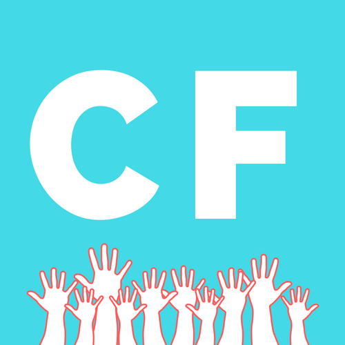

- STEP 1
- STEP 2
- STEP 3
- STEP 4

CHARITY FINDER
FIND OUT WHAT TYPE OF PHILANTHROPIST YOU ARE!
STEP 1
Take The Quiz
Take The Quiz
If you were given $1M, what would you do with it?
- A Go on a safari
- B Travel around the world
- C Donate to hurricane victims
- D Self-improvement
- E Pay for college education
- F Donate to local women's shelter
What is your spirit animal?
- A Lion: Confident
- B Rabbit: Intuitive
- C Horse: Adventurous
- D Eagle: Wise
- E Fox: Quick-Thinking
- F Dog: Loyal
What is the first thing you drink in the morning?
- A Black Tea
- B Green Tea
- C Water
- D Smoothie
- E Coffee
- F Orange Juice
What is your favorite sport to watch?
- A Soccer
- B Basketball
- C Hockey
- D Golf
- E Chess
- F Baseball
Who is your hero?
- A My Pet
- B My Child
- C My Local Police / Firefighers
- D My Parents
- E My Teacher
- F Oprah
Who is your favorite celebrity?
- A Jon Stewart
- B Leonardo diCaprio
- C Sandra Bullock
- D Demi Lovato
- E Magic Johnson
- F Kanye West
Who do you think is/was the most influential US First Lady?
- A Florence Harding
- B Eleanor Roosevelt
- C Melania Trump
- D Hillary Clinton
- E Michelle Obama
- F Betty Ford
What is the scariest trend since 2000?
- A Animal Extinction
- B Climate Change
- C 9/11
- D GMOs
- E Lack of Access to Free Education
- F Diminishing Human Rights
What is your favorite quote?
- A "Until one has loved an animal, a part of one's soul remains unawakened."
- B “Earth provides enough to satisfy every man's needs, but not every man's greed.”
- C "You need to embrace change if the alternative is disaster."
- D "All the money in the world can't buy you back good health."
- E "Education is the most powerful weapon which you can use to change the world."
- F "The rights of every man are diminished when the rights of one man are threatened."
STEP 2
Get Your Results
Get Your Results
Your Cause Is:
STEP 3
How To Make A Difference
How To Make A Difference
This best describes my current lifestyle:


STEP 4
Where To Make a Difference
Where To Make a Difference